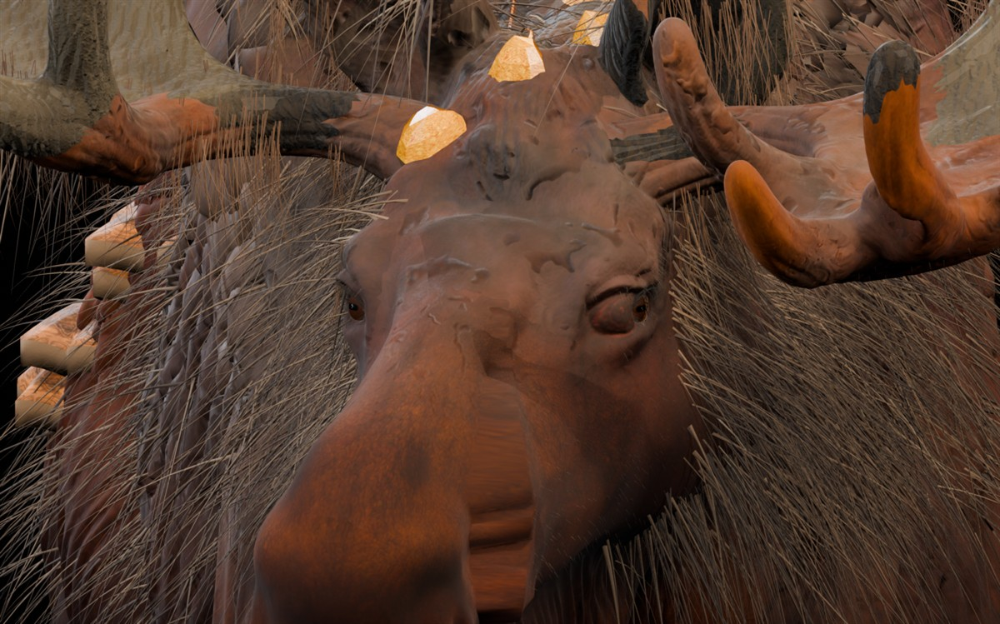

Лось-мутант: переделанные глаза
Новая версия существующей 3D-модели. Углублена посадка левого глаза, переработаны обе радужки и горизонтальные зрачки, сужена геометрия верхних и нижних век, уменьшена припухлость внутренних уголков. Контрольные изображения ниже — настоящие Blender-рендеры, не концепт-арт. Нажмите на большой кадр, чтобы открыть его в полном размере.

1 / 7 · Морда спереди
Используйте клавиши ← / → для смены ракурса
Сравнение глаз: V30V → V31B
Слева — предыдущая версия с выпуклым глазным яблоком и маленьким зрачком. Справа — текущая V31B с изменённой посадкой и более открытой, узкой линией век.
 До · V30V
До · V30V После · V31B
После · V31BГеометрия глаз2 объёмных глаза, боковые глазницы, 204 полигона век в меше черепа
Остальная модельОригинальная 4K PBR-кожа, горб, шерсть и 26 кристаллических образований сохранены
Файлы на ПК.blend 329,8 МБ · игровой .glb 265,1 МБ